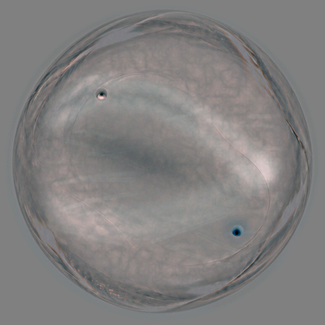
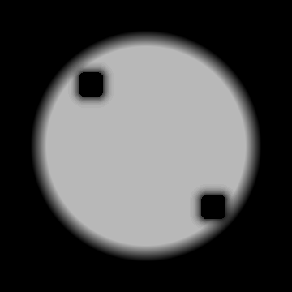

K2 A-authority / B-internal study
A 已由你选为 K2 静态 authority。B 只作为内部纹理和流向参考，B 的 core/glow 不继承；外壳、轮廓、core 和最终球体身份始终来自 A。
READY FOR HUMAN REVIEW · A frozen · B internal study only
候选对比

A · frozen authority
静态终点，完整球体、shell 和 core authority。

B · internal reference
只观察内部纹理组织和流向感；不继承 B 的 core。

A shell/core + B interior
候选 study：A 的外壳和 core 保持不动，B 只进入内部 mask。
内部变化与保护区

B − A delta
仅用于看 B 相对 A 的内部差异。

internal mask
灰度越亮越允许 B 影响；外壳与 core 保护为黑。
自动检查
cycle = 2
authority = A_static_composite
shell_preservation_mean_abs_rgb_255 = 0.0
core_preservation_mean_abs_rgb_255 = 0.0
interior_texture_delta_mean_abs_rgb_255 = 5.4239
runtime = false
production = false
这不是动态实现，只是下一步字段研究的静态候选。若你认可这张候选的内部组织，下一轮才会把 B 的内部差异转成受控 field study；A 的 shell、silhouette 和 core 继续冻结。